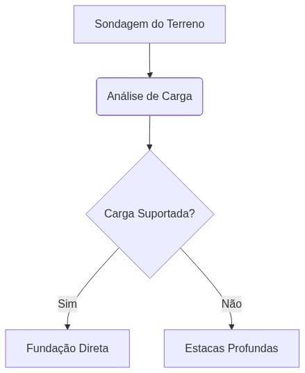

O cálculo de dimensionamento dos pilares de sustentação foi executado utilizando o critério de esbeltez e tensão admissível do material, conforme a formulação clássica:
\[ \sigma = \frac{P}{A} \pm \frac{M}{W} \]
Abaixo, apresentamos o diagrama lógico que descreve o fluxo de validação da infraestrutura da obra:
